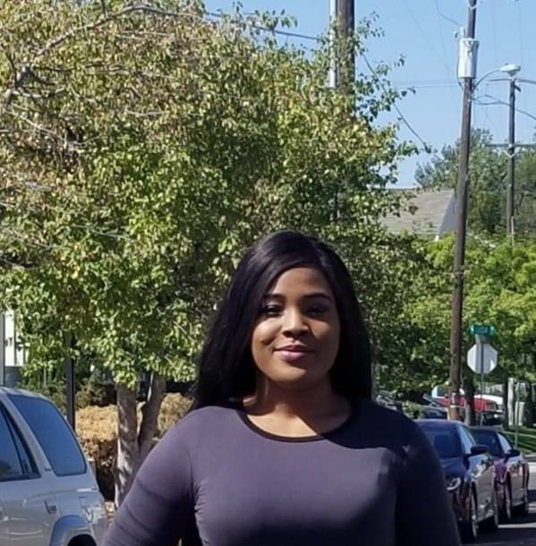

<!DOCTYPE html>
<html>
<head>
	<meta http-equiv="Refresh" content="0; url=https://cse.nd.edu/people/graduate-students" />
</head>

</html>


<!--<!DOCTYPE HTML>-->

<!--<html>-->
	<!--<head>-->
		<!--&lt;!&ndash; Global site tag (gtag.js) - Google Analytics &ndash;&gt;-->
		<!--<script async src="https://www.googletagmanager.com/gtag/js?id=UA-112375681-1"></script>-->
		<!--<script>-->
		  <!--window.dataLayer = window.dataLayer || [];-->
		  <!--function gtag(){dataLayer.push(arguments);}-->
		  <!--gtag('js', new Date());-->

		  <!--gtag('config', 'UA-112375681-1');-->
		<!--</script>-->
		<!--<title>Oghenemaro Anuyah</title>-->
		<!--<meta charset="utf-8" />-->
		<!--<meta name="viewport" content="width=device-width, initial-scale=1" />-->
		<!--<script src="assets/js/ie/html5shiv.js"></script>-->
		<!--<link rel="stylesheet" href="assets/css/main.css" />-->
		<!--<link rel="stylesheet" href="assets/css/ie8.css" />-->
		<!--<link rel="stylesheet" href="assets/css/ie9.css" />-->
		<!---->

	<!--</head>-->
	<!--<body class="no-sidebar">-->
		<!--<div id="page-wrapper">-->

			<!--&lt;!&ndash; Header &ndash;&gt;-->
				<!--<div id="header-wrapper">-->
					<!--<div id="header" class="container">-->

						<!--&lt;!&ndash; Logo &ndash;&gt;-->
							<!--<h1 id="logo"><a href="index.html">Home</a></h1>-->

						<!--&lt;!&ndash; Nav &ndash;&gt;-->
							<!--<nav id="nav">-->
								<!--<ul>-->
									<!--<li><a href="education_and_work_experience.html">EDUCATION</a></li>-->
									<!--<li><a href="experience.html">EXPERIENCE</a></li>-->
									<!--&lt;!&ndash;<li class="break"><a href="right-sidebar.html">Right Sidebar</a></li>&ndash;&gt;-->
									<!--<li class="break"><a href="awards_and_scholarships.html">AWARDS</a></li>-->
									<!--<li><a href="publications_and_projects.html">RESEARCH</a></li>-->
								<!--</ul>-->
							<!--</nav>-->

					<!--</div>-->
					<!--<br>-->

					<!--&lt;!&ndash; Hero &ndash;&gt;-->
						<!--<section id="hero" class="container">-->
							<!--<header>-->
								<!--<h2><strong>Oghenemaro Anuyah</strong></h2>-->
								<!--<br>-->
							<!---->
							<!--</header>-->
							<!---->
						<!--</section>-->

				<!--</div>-->

			<!--&lt;!&ndash; Main &ndash;&gt;-->
				<!--<div class="wrapper">-->
					<!--<div class="container" id="main">-->
						<!--<div class="row 150%">-->
							<!--<div class="8u 12u(narrower)">-->

								<!--&lt;!&ndash; Content &ndash;&gt;-->
									<!--<article id="content">-->
										<!--<header>-->
											<!--<h2><strong>Welcome!</strong></h2>-->
										<!--</header>-->
										<!---->
										<!--<p style="text-align:justify">I am a graduate student studying Computer Science at Boise State University. -->
				   <!--I currently work as a Research Assistant with <a href="http://solepera.github.io" target="_blank">Dr. Sole Pera</a>. -->
				   <!--My primary research area is Information Retrieval, and secondary research interests are Recommender Systems and Natural Language Processing. As part-->
				   <!--of my research, I belong to the <a href="http://coen.boisestate.edu/piret/" target="_blank" >People and Information Research Team (PiRet)</a>.  -->
				   <!--My current research involves making search engines suitable for kids, and I have engaged in several volunteering events organized for kids such as the stem-->
				   <!--night and e-girls. I am currently the financial officer of the <a href="http://coen.boisestate.edu/acm-w/officers/" target="_blank">ACM-W</a> organization at Boise State University. I am also-->
					<!--the vice president of the National-->
				   <!--Society of Black Engineers (NSBE) and Society of Women Engineers chapter at my school. In my free time, I enjoy watching movies, outing with friends-->
				   <!--and playing basketball. I also enjoy reading, and taking coding challenges.</p>-->
				   <!---->
				   <!--<div>-->
				   <!--<h3><strong>Contact</h3>	</strong>	   -->
					<!--<p><b>Address </b><br>-->
					<!--Boise State University<br>-->
					<!--Department of Computer Science<br>-->
					<!--777 W Main St, Boise, ID 83702<br><br>-->
					<!--<b>Email</b><br>-->
					<!--maroanuyah at gmail dot com</p>-->
							<!--</div>-->
									<!--</article>-->

							<!--</div>-->
							<!---->
							<!--<div class="4u 12u(narrower)">-->

								<!--&lt;!&ndash; Sidebar &ndash;&gt;-->
									<!--<section id="sidebar">										-->
										<!--<section>-->
											<!--<a href="#" class="image featured"></a>-->
											<!--<header>-->
												<!--<h3>Recent News</h3>-->
											<!--</header>											-->
											<!--<ul>-->
												<!--<li style="text-align:justify">- I was awarded a travel scholarship to attend the <a href="http://www.nsbc.org/">National Society of Blacks in Computing</a> conference in Atlanta, Georgia.</li>-->
												<!--&lt;!&ndash;<li style="text-align:justify">- Our paper titled "Looking for the movie Seven or Sven from the movie Frozen? A multi-perspective strategy for recommending queries for children" was just accepted to the CHIIR conference in New Brunswick, 2018.</li>&ndash;&gt;-->
												<!---->
											<!--</ul>-->
										<!--</section>-->
									<!--</section>-->

							<!--</div>-->
						<!--</div>-->
						<!---->
					<!--</div>-->
				<!--</div>-->

				<!--&lt;!&ndash; Footer &ndash;&gt;-->
				<!--<div id="footer-wrapper">-->
					<!--<div id="footer" class="container">-->
					<!--<div class="row">-->
					<!--<section class="6u 12u(narrower)">-->
								<!--<div class="row 0%">-->
									<!--<ul class="divided icons 6u 12u(mobile)">-->
										<!--<li class="icon fa-twitter"><a href="https://twitter.com/Luz_brilliante" target="_blank"><span class="extra">Twitter</span></a></li>-->
										<!--</ul>-->
									<!--<ul class="divided icons 6u 12u(mobile)">-->
										<!--<li class="icon fa-github"><a href="https://github.com/ANUYAH1" target="_blank"><span class="extra">Github</span></a></li><br>-->
										<!---->
									<!--</ul>-->
								<!--</div>-->
							<!--</section>-->
					<!--<section class="6u 12u(narrower)">-->
								<!--<div class="row 0%">-->
									<!--<ul class="divided icons 6u 12u(mobile)">-->
										<!--<li class="icon fa-linkedin"><a href="https://www.linkedin.com/in/oghenemaro-anuyah-31a26751/" target="_blank"><span class="extra">Linkedin</span></a></li>-->
									<!--</ul>-->
									<!--<ul class="divided icons 6u 12u(mobile)">-->
										<!--<li class="icon fa-google"><a href="https://scholar.google.com/citations?user=sFZ5nXsAAAAJ&hl=en" target="_blank"><span class="extra">Google Scholar</span></a></li>-->
										<!---->
									<!--</ul>-->
								<!--</div>-->
							<!--</section>-->
								<!---->
						<!---->
					<!---->
					<!--</div>-->
					<!--</div>-->
					<!--</div>-->
					<!---->
					<!--<div id="copyright" class="container">-->
						<!--<ul class="menu">-->
							<!--<li>&copy; Oghenemaro Anuyah. All rights reserved.</li><li>Design: <a href="http://html5up.net">HTML5 UP</a></li>-->
						<!--</ul>-->
					<!--</div>-->
				<!--</div>-->

		<!--</div>-->

		<!--&lt;!&ndash; Scripts &ndash;&gt;-->

			<!--<script src="assets/js/jquery.min.js"></script>-->
			<!--<script src="assets/js/jquery.dropotron.min.js"></script>-->
			<!--<script src="assets/js/skel.min.js"></script>-->
			<!--<script src="assets/js/util.js"></script>-->
			<!--<script src="assets/js/ie/respond.min.js"></script>-->
			<!--<script src="assets/js/main.js"></script>-->

	<!--</body>-->
<!--</html>-->